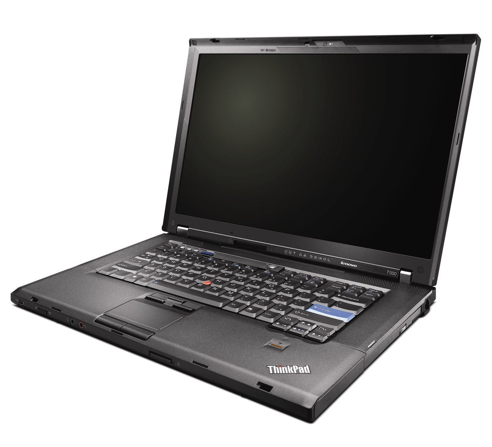

The Power of ThinkPads
Created: 2021-01-30 | Modified: 2021-01-30
My T500

The previous laptop I owned was one of these bad boys.
- Intel Core2 Duo processor T9550 (2.67GHz, 6MB L2, 1066MHz FSB, TDP 35W)
- Switchable Graphics with Intel GMA 4500MHD and ATI Mobility Radeon HD 3650 (256 MB)
- 15.4" TFT display with 1680x1050 resolution (WSXGA+)
- 8GB SD-DDR3 (upgraded from 4GB)
- 1TB Drive (upgraded from 160GB)
- 2x MiniPCIe slot
- 1x SD Card Reader
- Bluetooth capable
- TPM
- Fingerprint Reader (Didn't use this at all (not even once))
It also had the obvious stuff, like: 1x Ethernet port, 1x headphone port, 1x microphone port, etc.
The build quality is still way better than any laptop nowadays. I had purchased mine used off of eBay in 2014 or 2015 for $200 dollars from a used computer store in my province. I used it as my main device all the way until the summer of 2019 when the Intel graphics chip finally crapped out on me (it was faulty when I got it). Mine was almost pristine the entire time I had it, aside from one of the hinges breaking, something I replaced quickly for $5 (CAD) from China. I would have had it still if it wasn't for that GFX chip. Pretty damn good for a laptop being used and abused since 2008.
At the time, I was running Ubuntu 18.04, Arch Linux, and Debian 7, 8, and 9. My main OS was Debian. I always ran i3wm, only dabbling with dwm towards its end of life. For the most part, I only used terminal based programs, aside from firefox and a few others. My T500 felt snappier than any new laptop on the market, totally because of 1) the great keyboard (not the flat trash we have nowadays), and 2) the great TrackPoint of OG ThinkPads. This is only counting hardware, I'm not counting the great software that is tiling managers.
The old bastard is libreboot and quadcore capable too. Fucking hell this thing was nuts. The old thing even had a removable CPU. What kind of laptop has a removable CPU now? None. (((They))) butchered it all. Good doesn't appeal to the general public. They prefer the sheen of a MacBook. The industrial complex strikes again, but I digress.
From my research, this was the peak of old ThinkPads, which I still believe. Actually, even more so, the peak laptop. If you're looking for a big laptop, one that's customizable, one that's free from the constrictions of proprietary software, and know how to use a computer and surpass its incapabilities, buy this one. If you want a small one, buy an Intel Core 2 Duo laptop from the ThinkPad X-Series. That's what I'll buy next in 2 to 4 years, after I my E550 breaks or I get bored it and have enough disposable income.
Sub to this person for /g/ certified CS, ThinkPad, programming, and hardware videos.
My (Current) E550

- Intel Core i3 (not sure exactly which version, will update when I bother to look)
- Windows 10 Home 64
- Intel HD Graphics
- 8GB DDR3L 1600 MHz
- 15.6" HD 1366 x 768 200 nit Antiglare
- 14.84" x 10.08" x 1.06"
- 720P HD Webcam with dual mic, optional
- 240 GB Kingston SSD and 1TB Seagate HDD (replaced CD drive with this)
Right now I own a E550 (two to be exact (one I keep for parts)), which is good, but not as good as the old style and feel of my T500. I ended up with the E550 through one of my parents workplace, who previously had an entire supply of Lenovo products at their office. Recently (2019), upon upgrading, they had a surplus of Lenovo products and knew that I fixed computers, so they gave them to me, knowing that I'll put them to good use. I was given two ThinkCenters and two ThinkPad E550s to be exact. One of the ThinkCenters was old, using DDR2 ram, the other being a very new DDR3 system with lots of SATA ports (4, I think).
I normally run dwm, i3wm, or Windows if I'm messing with Cyber security/pen-testing stuff. I used to hate running Windows, as I'm better with Linux, but I've gotten used to it by using AutoHotkey, WSL, and gVim. These days it's actually super usable. Some days I even enjoy the ease of Windows... Other times not so much. Anyways, seeing as the laptop has 8GB SD-DDR3 RAM, one SSD and a 1TB HDD (swapped CD drive for a hard drive bay), and the glorious TrackPoint (not as good as the T500's), it's not a bad system. Oh yeah, and the battery life is better than the T500. Of course it's usable, it's still a fairly new laptop, but it's not something that I would have purchased if it wasn't for free. The only reason I'm using it now is because I have two of them, and it just works. There's no reason to go and spend money on another system when this one works just fine as it is.
I do have some gripes with the thing: screen is 1336x768 and has bad viewing angles, the keyboard is in the new ThinkPad style (chicklet trash, it feels like you're typing on a board), and no screen hinge lock.
The Power of ThinkPads
ThinkPads are peak personal computing. ThinkPad, old and new, trump all other PC. None other than ThinkPad has customizability, extensibility, and the best pointer system (TrackPoint) all in one, and without compromise. I guess - to clearly answer the question - the power of ThinkPads lie in their ability to do what the user wants instead of the user conforming to what their system is limited to. In a way, it's like the free (libre) software of the hardware world.